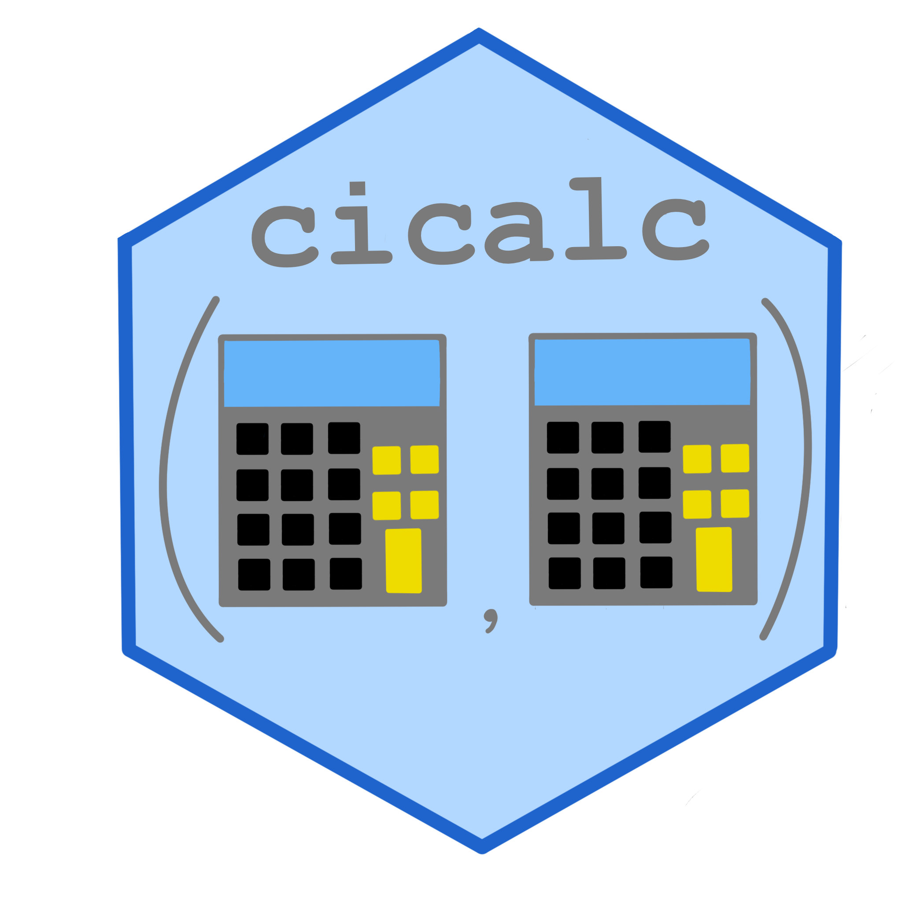

cicalc 
{cicalc} contains a number of confidence intervals commonly used in the pharma industry. For a full list of available methods see the package index
Installation
You can install the development version of cicalc from GitHub with:
# install.packages("devtools")
devtools::install_github("GSK-Biostatistics/cicalc")Example
A subsection of common CI’s available in this package are below:
library(cicalc)
# Example of CI for proportions
x <- c(
TRUE, TRUE, TRUE, TRUE, TRUE,
FALSE, FALSE, FALSE, FALSE, FALSE
)
ci_prop_wald(x, conf.level = 0.9)
#>
#> ── Wald Confidence Interval without Continuity Correction ──────────────────────
#> • 5 responses out of 10
#> • Estimate: 0.5
#> • 90% Confidence Interval:
#> (0.2399, 0.7601)
ci_prop_wilson(x, correct = TRUE)
#>
#> ── Wilson Confidence Interval with continuity correction ───────────────────────
#> • 5 responses out of 10
#> • Estimate: 0.5
#> • 95% Confidence Interval:
#> (0.2366, 0.7634)
ci_prop_clopper_pearson(x)
#>
#> ── Clopper-Pearson Confidence Interval ─────────────────────────────────────────
#> • 5 responses out of 10
#> • Estimate: 0.5
#> • 95% Confidence Interval:
#> (0.1871, 0.8129)
ci_prop_agresti_coull(x)
#>
#> ── Agresti-Coull Confidence Interval ───────────────────────────────────────────
#> • 5 responses out of 10
#> • Estimate: 0.5
#> • 95% Confidence Interval:
#> (0.2366, 0.7634)
ci_prop_jeffreys(x)
#>
#> ── Jeffreys Interval ───────────────────────────────────────────────────────────
#> • 5 responses out of 10
#> • Estimate: 0.5
#> • 95% Confidence Interval:
#> (0.2235, 0.7765)
# Example of CI for difference of proportions
# Generate binary samples
responses <- expand(c(9, 3), c(10, 10))
arm <- rep(c("treat", "control"), times = c(10, 10))
# Calculate 95% confidence interval for difference in proportions
ci_prop_diff_mn(x = responses, by = arm)
#>
#> ── Miettinen-Nurminen Confidence Interval ──────────────────────────────────────
#> • 9/10 - 3/10
#> • Estimate: 0.6
#> • 95% Confidence Interval:
#> (0.17, 0.8406)
# Stratified
strat_df <- dplyr::tibble(
responses = expand(c(9, 3, 7, 2), c(10, 10, 10, 10)),
arm = rep(c("treat", "control"), 20),
strata = rep(c("stratum1", "stratum2"), times = c(20, 20))
)
ci_prop_diff_mn_strata(x = responses, by = arm, strata = strata, data = strat_df)
#>
#> ── Stratified Score Miettinen-Nurminen Confidence Interval ─────────────────────
#> • 12/20 - 9/20
#> • Weights: stratum1 = 5, stratum2 = 5
#> • Estimate: 0.15
#> • 95% Confidence Interval:
#> (-0.1606, 0.4338)